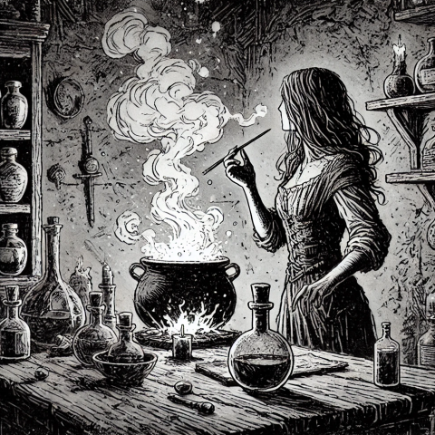

Potion-Based Magic Mechanics

The magic of potions is the magic of the common people. Unlike 'True' magic, potion magic is available to all species. Recipes must be learned or researched. The appropriate equipment must be available.
The intent is to provide a system similar to magic in Shadowdark, Old-School Essentials or other OSR system that works for this world. My goal was to make the system flavorful but still keep with the spirit of the systems.
- Brewing is a downtime activity
- Use can occur during action scenes
- Success/Failure is not a binary - partial success during use is possible.
Brewing Potions
- Potion Brewing Skill: Characters with the "Potion Mastery" talent (or equivalent) can brew potions. To brew a potion, make a brewing check by rolling 1d20 + your Intelligence (or Alchemy) modifier.
- Brewing Difficulty: The DC to successfully brew a potion is 10 + the potion’s tier. Failure results in wasted ingredients and a potential mishap (similar to spellcasting mishaps).
- Long Brew Times: Brewing a potion typically takes several hours to several days, depending on the potion’s tier and complexity. This is a downtime activity.
- Ingredients: More powerful potions require rarer, and more quest-worthy, ingredients.
Using Potions
- Delivery Methods: Potions must be consumed, splashed, inhaled, or otherwise applied to deliver their effects. When using a potion, the player rolls an "Application Check," which determines whether the potion's effects succeed.
- Check Type: Roll 1d20 + Dexterity (for thrown potions like splash vials) or opposed Constitution (for consumed or inhaled potions).
- Difficulty: The DC is 10 + the potion’s tier. On success, the potion works as intended.
- Failure: The potion fails to activate, potentially wasting the dose or having reduced effects.
Critical Success & Failure
- Critical Success (Natural 20): Double one of the potion’s numerical effects, such as increased damage, longer duration, or enhanced healing.
- Critical Failure (Natural 1): The potion backfires or has an unintended consequence. Roll on a mishap table specific to potion use (e.g., causing an explosion, poisonous vapors, or incorrect effect).
Potion Tiers
- Potions, like spells, are divided into tiers (1–5). Higher-tier potions require rarer ingredients, more complex brewing processes, and longer preparation times.
- Example Tier 1 Potions: Healing Draft (equivalent to Cure Wounds), Fire Flask (equivalent to Burning Hands when splashed), Potion of Invisibility (mimics Invisibility).
- Example Tier 2 Potions: Acid Flask (equivalent to Acid Arrow), Levitation Brew (equivalent to Levitate), Paralysis Toxin (equivalent to Hold Person).
Duration & Range
- Potion Duration: Varies depending on the type. A healing draft may be instant, while a strength-enhancing potion may last several rounds. For splash potions like a Fire Flask, the effect is instantaneous.
- Potion Range: "Self" range means the potion must be consumed or applied by the user, while "Near" or "Far" potions (such as a splash vial) can be thrown up to a specific distance.
Ingredient Gathering
- Potions require specific ingredients, which players must gather during their adventures or purchase from specialists.
- Rarity & Cost: Higher-tier potions require rarer, more expensive ingredients.
- Foraging Check: Players can search for ingredients in the wild by making a Nature or Survival check (DC depends on environment and ingredient rarity).
Potion Mishaps Table
(When rolling a natural 1 or failing critically on brewing/application)
The following are for inspiration.
- Volatile Reaction: The potion explodes in your hands, dealing 1d6 damage to you and anyone within close range.
- Spoiled Brew: The potion spoils, releasing a rancid odor that attracts nearby creatures within a near range.
- Wrong Effect: The potion takes on the properties of a completely different brew (roll on a random potion table or GM’s choice).
- Delayed Activation: The potion doesn't work immediately; its effects trigger 1d6 rounds later, potentially at an inopportune time.
- Toxic Fumes: The potion releases poisonous vapors, causing all creatures within close range to make a Constitution saving throw or take 1d6 poison damage.
- Reduced Potency: The potion works, but at half its normal strength (e.g., healing half as much or dealing half damage).
- Backfire: Instead of affecting the target, the potion affects the user (or the wrong target, if thrown).
- Sticky Residue: The potion leaves a sticky film on everything it touches, halving the target’s movement speed for 1d4 rounds.
- Corrupted Brew: The potion’s magic backfires, causing the user to suffer 1d4 temporary Constitution damage for 1d4 hours.
- Overload: The potion’s effects are amplified, but in an uncontrolled way. Damage, healing, or other effects are doubled, but the user suffers 1d4 rounds of debilitating fatigue afterward.
- Hallucinations: Instead of the intended effect, the potion causes vivid hallucinations lasting 1d6 rounds, making it difficult to distinguish friend from foe.
- Reverse Effect: The potion has the opposite effect of what was intended (e.g., a healing potion causes damage, a fire potion creates ice).
- Unstable Mutation: The user grows an extra limb, eye, or other minor mutation for 1d4 hours, causing a -2 penalty to Dexterity-based checks.
- Spilled or Shattered: The potion container slips from your hands, shattering on the ground and becoming unusable.
- Mind Numb: The potion causes the user’s mind to temporarily go blank, imposing disadvantage on Intelligence-based checks for 1d4 hours.
- Foul Taste: The potion is so foul-tasting that the user vomits immediately, losing their next action.
- Combustion: Upon application, the potion causes the target (or user, if consumed) to ignite in flames, taking 1d6 fire damage each round until extinguished.
- Magical Echo: The potion’s effect repeats uncontrollably, causing the same effect to happen again in 1d4 rounds (potentially with disastrous results).
- Inversion: The potion causes all spells or magic effects on the user to invert for 1d4 rounds (e.g., healing becomes harm, protection becomes vulnerability).
- Random Effect: The potion has an entirely random effect.
Tier 1 Potions (Basic and common potions)
It is assumed that the ingredients to prepare these are minor in cost and/or require a DC 11 (10 + 1) to forage.
Healing Draft: Restores 1d6 HP when consumed. Fire Flask: A throwable potion that deals 2d6 fire damage in a small area. Light Potion: Causes the drinker or thrown object to glow brightly for 1 hour. Potion of Feather Fall: Reduces falling speed, preventing damage from falls for 1 minute. Sleep Mist: Creates a vapor that causes creatures in a close range to fall asleep for 1d4 rounds. Potion of Strength: Grants +1 to Strength for 1d4 hours. Venom Vial: When applied to a weapon, the next attack delivers 1d6 poison damage. Potion of Spider Climb: Allows the drinker to walk on walls and ceilings for 10 minutes. Potion of Lesser Invisibility: Grants invisibility for 1d4 rounds or until the drinker takes action. Sonic Burst Flask: Emits a loud, disorienting sound, causing creatures in a close range to be stunned for 1 round. Potion of Resist Cold: Grants the drinker resistance to cold damage for 1 hour. Potion of Darkvision: Allows the drinker to see in complete darkness for 1 hour. Potion of Water Breathing: Grants the ability to breathe underwater for 1 hour. Potion of Speed: Increases the drinker’s movement speed for 10 minutes. Charm Elixir: When consumed, grants advantage on Charisma-based checks for 1 hour. Stone Skin Oil: When rubbed on the skin, grants +2 to AC for 1d4 rounds. Potion of Clarity: Removes fear, confusion, or charm effects when consumed. Flame Oil: Coats a weapon in flames for 1 minute, adding 1d4 fire damage to attacks. Tanglefoot Vial: A thrown vial that creates sticky vines, trapping creatures in a close range for 1d4 rounds. Potion of Minor Healing: Heals 1d4 HP when consumed (less potent than the Healing Draft).
Tier 2 Potions (More complex and powerful potions)
It is assumed that the ingredients would be available in a well stocked city for a reasonable cost and/or require a DC 12 (10 + 2) to forage.
Greater Healing Elixir: Restores 2d6 HP when consumed. Acid Flask: A throwable potion that deals 3d6 acid damage to a target. Invisibility Brew: Grants invisibility for up to 10 minutes or until the drinker takes action. Levitation Draught: Allows the drinker to levitate a close range off the ground for 10 minutes. Potion of Giant Strength: Grants +2 to Strength for 1d4 hours. Frostbite Flask: Deals 3d6 cold damage in a close radius when thrown. Potion of Fire Resistance: Grants resistance to fire damage for 1 hour. Paralysis Poison: When applied to a weapon, causes the next attack to paralyze the target for 1d4 rounds (save negates). Potion of Stone Form: Turns the drinker’s body into solid stone, making them immune to damage but unable to move for 1 minute. Phantom Step Potion: Allows the drinker to teleport up to near range once within 10 minutes of consuming. Potion of Tongues: Grants the ability to speak and understand any language for 1 hour. Web Flask: A thrown potion that creates sticky webs in a close range, trapping creatures for 1d6 rounds. Potion of Flight: Grants the ability to fly for 10 minutes. Potion of Heroism: Grants +2 to all attack rolls and saving throws for 1 hour. Potion of Shielding: Grants +2 to AC for 1 hour. Potion of Mind Reading: Allows the drinker to read surface thoughts of creatures within near range for 10 minutes. Potion of Silence: Creates an area of magical silence in a 15-foot radius for 1d4 minutes. Elixir of Disguise: Allows the drinker to alter their appearance for 1 hour. Potion of Water Walking: Grants the ability to walk on water for 1 hour. Potion of Blazing Aura: Surrounds the drinker in a fiery aura, dealing 1d6 fire damage to any creature within close range for 1d4 rounds.
Tier 3 and Higher Tier Potions (Very complex and powerful potions)
It is assumed that the ingredients for potions at these tiers would only be available in the largest of cities, if at all. And then only for tremendous cost. They would also require the right contacts to be made in order to purchase them. Foraging for the ingredients is assumed. The foraging missions would be the subject of quests and challenges.